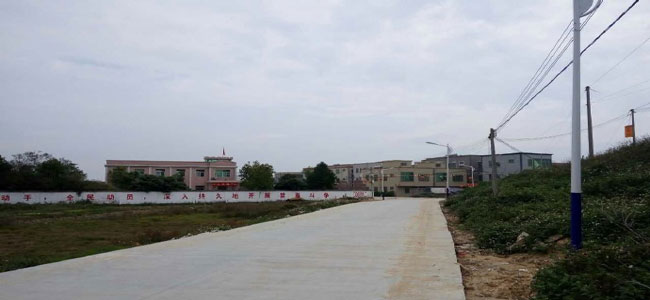
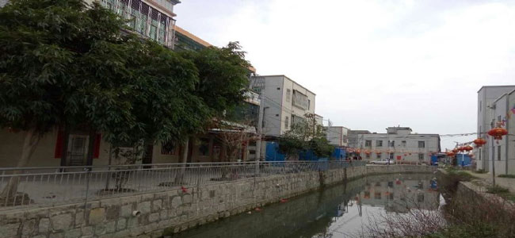
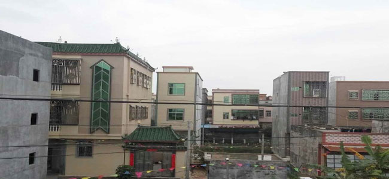

遥瞻前方万里路，福星高照到天涯
December 9th, 2016 , Posted by Longwen Tang
不得不吐槽一下以前这条走出村的路全是泥土，下雨天后特别难走，全是坑坑洼洼的。现在可不一样了，不仅修成了水泥路，旁边还配了路灯，现在开车走起来可舒服多了，而且有了路灯晚上开车也安全了许多。
功名富贵亦常在，河水涓涓向乡流
December 9th, 2016 , Posted by Longwen Tang
这里以前是一条未经修整过的小溪，当时垃圾满面，而且到处都是水葫芦。现在好了许多，经过修筑围墙和清理垃圾后，溪水流畅，而且两旁还挂起了喜庆的灯笼和种植了树，确实给人一特别的乡村气息。
秋山晴雨闲吟处，倚遍江南寺寺楼
December 9th, 2016 , Posted by Longwen Tang
诶？这图发展在哪里？不就一些普通的建筑物么。但你可真不知道这里以前可是一大片沙场，那里曾经是我们这群孩子周末的娱乐天地，转眼间十年这里就建起了许多小楼，逐渐现代化起来了，时间真的见证了这里的发展。
